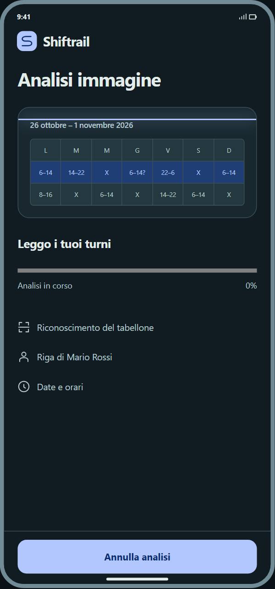
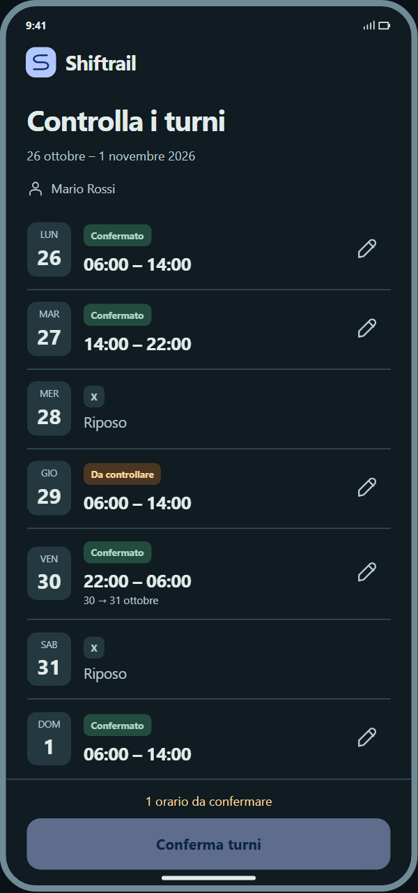
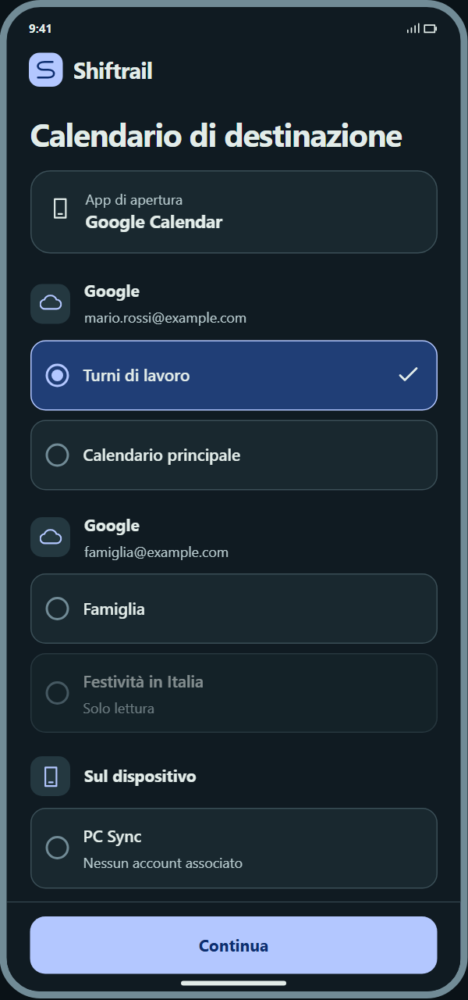
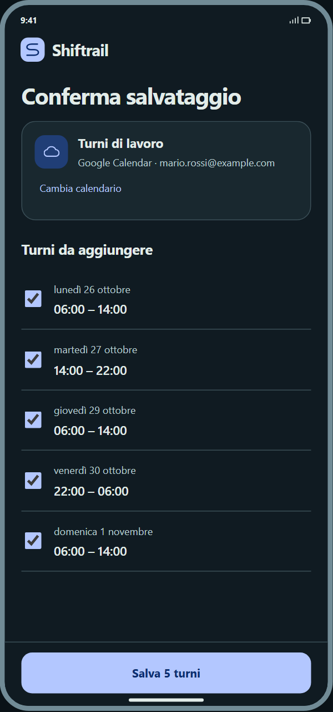
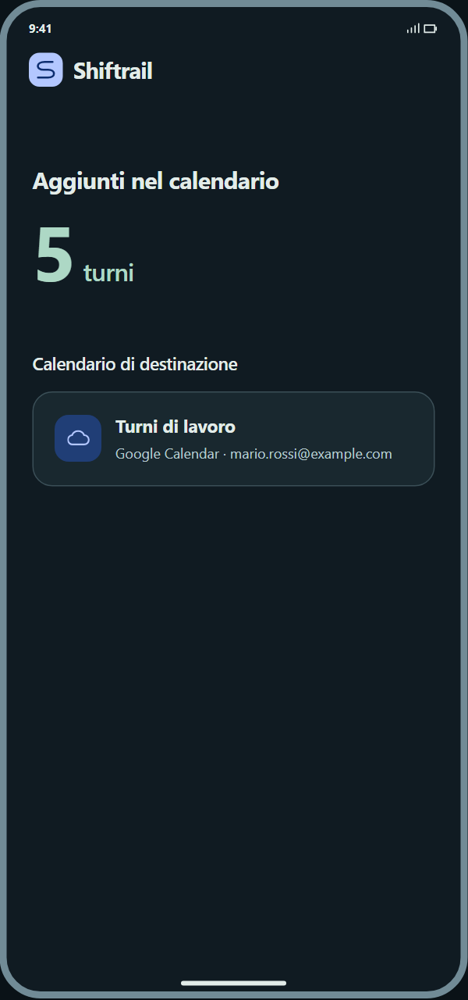
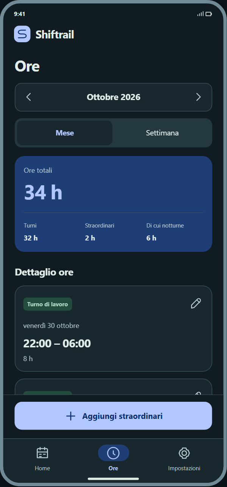
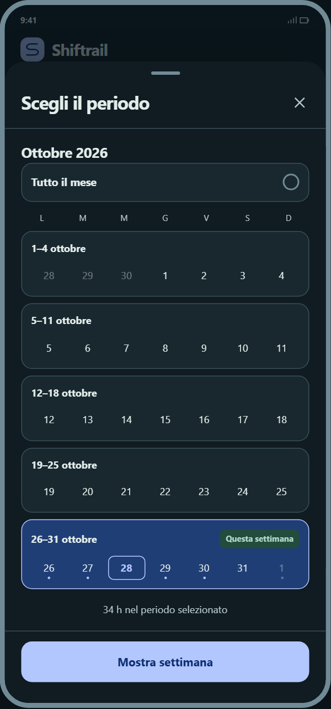
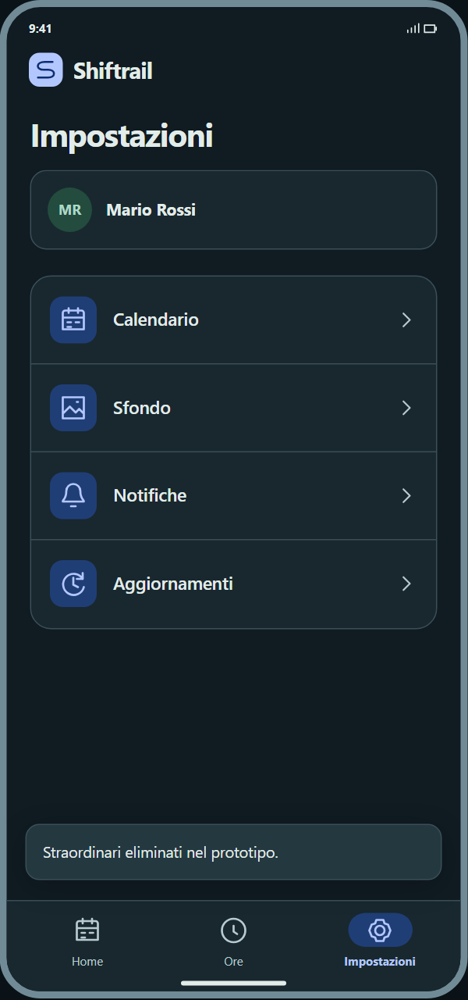

01 / Analisi dell’immagine
02 / Controllo degli orari
03 / Calendario di destinazione
04 / Riepilogo prima di salvare
05 / Conclusione
Ore, settimane e Impostazioni
06 / Ore e Straordinari
07 / Scelta della settimana
08 / Impostazioni senza sottotesti